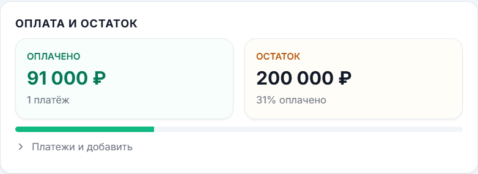

Квартиры.
Дома. Террасы.
Для компаний по остеклению квартир, частных домов, коттеджей и террас.
Проекты конструкций, расчёт, материалы, монтаж и оплаты в общем процессе.
Подробнее об остеклении
Отраслевая ERP для компаний по остеклению квартир, домов и террас — и по остеклению и отделке балконов и лоджий.
Оба направления. Полный доступ. Самостоятельный старт.
Свяжите то, что сегодня приходится
собирать по разным местам.
Расчёты и списки
Клиенты и договорённости
Проекты и документы
Замеры и задачи
Проект, расчёт, материалы и оплаты доступны в связанном процессе.
Разобрать по шагам
Каждый этап даёт следующий рабочий результат.
В направлении «Балконы и лоджии» соберите остекление, отделку и мебель в 3D. Обсуждайте решение наглядно, до начала работ.
Подготовленный проект можно передать в калькулятор, проверить и сохранить расчёт в заказе.
Как связаны 3D и расчётИз расчёта видны необходимые позиции и количества. Паспорт объекта помогает передать согласованное решение бригаде.
В паспорте для бригады — материалы и количества без цен. После изменений проекта сформируйте актуальную версию документа.
Материалы и выполнениеКонтролируйте деньги по заказу
и результаты работы компании.
Реальные экраны с демонстрационными суммами. Маржа на экране не равна чистой прибыли компании.
Сумма договора и поступившие деньги — разные показатели. Смотрите остатки оплаты, учитывайте расходы и анализируйте результат на основе заполненных данных.
Управленческий учётДва открытых направления.
Общий подход к управлению.
Для компаний по остеклению квартир, частных домов, коттеджей и террас.
Проекты конструкций, расчёт, материалы, монтаж и оплаты в общем процессе.
Подробнее об остекленииДля компаний по остеклению и отделке балконов и лоджий.
3D, утепление, отделка и мебель как часть одного проекта — вместе с расчётом, документами и управлением заказом.
Подробнее о балконах и лоджиях
Выберите направление кнопкой или продолжайте прокрутку.
Настоящие экраны.
Без перерисованного интерфейса.
Проекты и расчёты собраны в карточке.
Короткие записи реальной работы.
Видео запускается по нажатию.
ТЕЗЕРИ разрабатывает отраслевые программы для компаний по остеклению и отделке. Здесь важна связь между тем, что согласовали с клиентом, посчитали, подготовили и передали в работу.
Познакомьтесь с реальными действиями в базе знаний, затем проверьте свой сценарий в пробном периоде.
Открыть инструкцииДоступны два направления: остекление квартир, домов и террас; остекление и отделка балконов и лоджий. Комплексный 3D-проект с отделкой относится ко второму направлению.
Полный пробный доступ к обоим направлениям. Можно начать самостоятельно на подготовленных данных и проверить свой заказ.
Инструкции доступны через ИИ-бота, за помощью можно обратиться в чат службы поддержки. Подключение чата будет доступно вместе с пробным входом.
Начните с одного рабочего сценария: проверьте свои материалы, цены и порядок работы по заказу. Порядок перехода описан на отдельной странице.
Две недели, оба направления и готовые данные для самостоятельного старта.